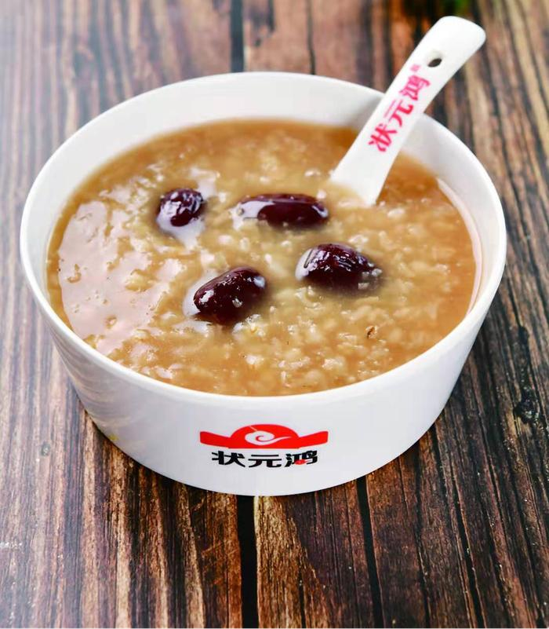

粉浆面条
粉浆面条是地地道道的驻马店美食，豌豆磨的浆，加上芹菜、黄豆、腌制而成的配菜，是当地人的最爱搭配。
确山凉粉
确山凉粉是确山地区的传统特色面食小吃，有上千的历史。 正宗的确山凉粉，是用确山杨店、顺山店一带所特产的铁豌豆（即金贵的药豌豆）制作而成， 颜色半透明呈淡绿色，顺滑爽口，口感弹而不糟，细腻纯正， 配上黄瓜丝、面筋块、绿豆芽，加入辣椒油、蒜汁、醋等调料充分拌匀就可食用。
状元鸿粥
因为驻马店“皇家驿站”的历史身份，粥类美食比其他城市更为流行。在明朝时，驻马店曾是明代的皇家驿站， 南来北往、长途跋涉的客人饥渴难耐，古代的驻马店人便会为他们端上一碗热粥。 如今，大大小小的粥店、粥铺、粥棚，开满了驻马店的大街小巷。 有不知名的苍蝇馆子，也有知名度高、连锁经营的粥类品牌，数火了11年的状元鸿粥，名气最大。
曹运洪胡辣汤
曹运洪胡辣汤，是曹运洪在祖传秘方的基础上，结合现代人的饮食习惯做了改良，汤用优质矿泉水、 牛腿胫骨大火熬制，配以泌阳3～5岁黄牛嫩牛肉、正阳优质花生米、上海海带丝、 平舆红薯粉条、手工面筋、杏仁、木耳、小葱等30多种原料配制。 喝着辣而不爆，有“中华名吃，天中一绝”之称